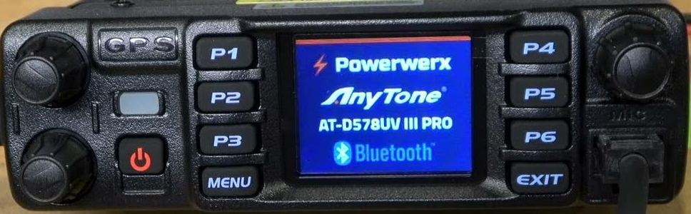
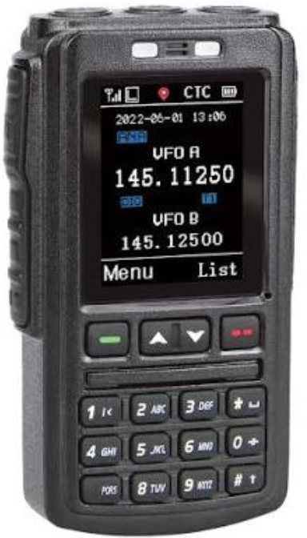

Premier essai · fonctions utilisables et marche à suivre
Sélectionner les quatre sauvegardes à gauche, puis Charger et démarrer. Le banc passe par le bootloader et transmet une seule impulsion Power au premier sommeil du MCU. Les délais OEM sont exécutés : l’écran peut mettre plusieurs minutes à apparaître selon l’ordinateur.
Le temps et les écritures LCD ci-dessous permettent de suivre l’exécution. Pause conserve la session ; Démarrer en continu la reprend. Les boutons de façade, le codeur, les deux volumes, les commandes du micro filaire, les entrées GPS et le client USB/CPS sont raccordés. Le firmware choisit leurs effets.
À compléter : le son de bout en bout, la protection ROS et le Bluetooth. Les consignes TX ne représentent pas une puissance RF mesurée. Le DMR reste reporté. Pour vérifier le site sans sauvegarde OEM, utiliser Vérifier le CPU et le LCD : ce programme ARM indépendant dessine son propre motif de test.
Les changements du codeplug restent dans la session. Avant de recharger les images ou fermer la page, exporter le correctif NAND ci-dessous pour les conserver.
Votre poste de travail D578
Chargez vos images, puis initialisez le processeur.
Temps du banc : 0.00 s · écritures LCD : 0
Conserver ou reprendre mes modifications NAND
Le correctif contient les pages modifiées et les empreintes SHA-256 des sauvegardes. Pour le reprendre, charger d’abord les mêmes fichiers puis importer le correctif : le banc vérifie les empreintes et redémarre le firmware. Les anciens correctifs sans empreintes restent réservés à leur banc d’origine. L’état du CPU n’est pas sauvegardé.
Horloges et périphériques actifs ; débogueur et trace détaillée désactivés. Les actions sur les fichiers et les commandes de session restent explicites.
Façade du poste

Les acquisitions ADC et les commandes de gain apparaîtront ici.
Audio · volumes et gains reçus du firmware
Aucune commande audio reçue.
Le firmware commande séparément les deux volumes, les coupures HP poste et HP micro, et les sélections de chemin. Les liaisons logiques sont décodées ci-dessous pour la Flash V1.21 de référence. Le transport sonore complet reste à raccorder.
Fréquences RF et consignes de puissance TX
Aucune commande RF reçue.
Les fréquences viennent des paires de registres écrites par l’OEM. Les codes de puissance propres au poste apparaissent après lecture de sa NAND. Les voies A/B partagent une consigne DAC ; aucune puissance en watts n’est déduite d’un code brut.
Audio · calibrations de service dans la NAND
Après chargement des images, maintenir ces deux entrées avant Reset, démarrer puis utiliser Power au réveil. Relâcher les touches lorsque l'écran OEM apparaît. Le firmware décide de l'accès au mode test avec ses autorisations NAND.
Aucune lecture de calibration observée.
Les valeurs apparaissent lorsque l'OEM les lit. Elles restent des codes bruts propres à la sauvegarde ; les droits du mode test et les copies sont gérés par le firmware.
Clavier : Tab pour choisir une touche, Espace ou Entrée pour appuyer. Power dure au moins 2 secondes du banc. Les positions A/B sont logiques ; leur ordre et leur courbe sur le poste restent à mesurer. Aucun son artificiel n’est produit.
Les touches analogiques suivent les reseaux PB0/ADC8 et PB1/ADC9. L'ecran ne recoit ses pixels qu'au front WR# du bus GPIOB/GPIOE. Sans firmware actif, il reste noir. Les clics de façade durent au moins 200 ms du temps du banc ; le codeur suit une séquence en quadrature, avec 2,5 ms entre phases. Chaque commande produit un front PC8 ; le nombre de fronts par cran réel reste à mesurer.
GPS · position et trajet d’essai sur USART1
Source GNSS synthétique : position, vitesse et cap entrent par le fil série. Le firmware interprète ses trames et dessine son écran. Les indications ci-dessous décrivent la source, pas le fix obtenu par l’OEM.
L’essai attend 6 s, parcourt quatre côtés de 30 m à 36 km/h (12 s), puis s’arrête. Le temps est celui du banc ; il avance pendant l’exécution du CPU. La source applique les commandes de cadence et de phrases NMEA reçues de l’OEM. Géométrie sphérique, sans modélisation des satellites ou de la réception RF.
Source absente.
Débit et perturbations de test
RMC, GGA et GSV à cadence fixe, sans attendre le firmware. Débit incompatible avec celui du MCU : arrêt explicite, car la réception bit par bit n’est pas portée. Aucune notification PMTK n’est ajoutée.
ATGM336H-5N · changement d’état d’antenne
Événement externe documenté par le constructeur (§2.8) : le module transmet un message GPTXT sur son UART lors d’un changement d’état d’antenne. Ce profil 5N doit correspondre à la variante installée pour qualifier le poste réel. Aucun message n’est envoyé automatiquement.
Entrée NMEA à 9600 baud. Le banc ne force ni le drapeau de reconnaissance ni le fix GPS. Le scénario de position reste une entrée indépendante ; la réception RF de l’antenne n’est pas calculée.
Injection manuelle NMEA
Une somme fournie est conservée, même erronée. Si elle manque, le banc la calcule. Cette injection manuelle suit le débit configuré par le MCU.
Capteurs et protections · étude SWR / ROS
Mesures brutes appliquées à l'ADC du GD32. Le firmware effectue ses conversions, son filtrage et ses décisions. Les valeurs ne sont pas étalonnées en °C, volts ou watts.
Charger les images pour observer les capteurs.
SWR / ROS : mesure, seuil et réaction OEM encore à identifier. ADC10 n'est pas déclaré capteur ROS. Aucune alarme ROS, coupure TX ou réduction de puissance n'est fabriquée par le banc.
Microphone filaire et microphone Bluetooth
Microphone filaire : clavier, PTT et voyants commandés par le firmware.
Maintenir une touche pour un appui long. Entrée ou Espace agit sur la touche sélectionnée. Le seuil est un paramètre d’essai ; sa durée physique reste à mesurer. Le trajet audio et la commande du rétroéclairage du clavier restent à compléter.
Détecteurs RX · entrées brutes du banc local
Ces registres alimentent le périphérique RF émulé. Le firmware décide du squelch et des voyants. Leur interprétation reste partielle ; cet essai ne reproduit pas une onde radio.

Bluetooth : photo de reference. Pilotage non raccorde, aucune reponse simulee.
Processeur et diagnostic
État du modèle matériel
RCU, SCB, USART, NAND : attente du moteur
Dernier arrêt
Images chargees et vecteurs de demarrage
Registres
État xPSR
—
Dernières entrées d’instruction observées
200 événements maximum en mémoireAucune trace.
USB / CPS Web
L'hôte USB du banc envoie les requêtes au contrôleur du GD32. Le firmware prépare les réponses dans sa PMA. La lecture CPS ci-dessous emprunte ce même chemin, sans accès direct à la NAND.
USB déconnecté. Démarrer le firmware avant la connexion.
Nom du canal 1
Le client sauvegarde le bloc de 128 Kio par CPS, change le nom et le renvoie au firmware. END clôture la programmation ; le watchdog redémarre le poste. Attendez son écran principal, puis lancez la vérification.
Aucune modification. Périmètre : canal 1, sauvegardes OEM V1.21 GD32 du projet.
16 caractères ASCII maximum. La relecture compare les 131 072 octets après reset ; l’acquittement seul ne valide rien. Les sauvegardes choisies sur votre ordinateur restent inchangées. Exportez le patch NAND pour conserver la session.
Aucune lecture CPS.
La connexion, les transferts et le redémarrage progressent quand le CPU tourne. La vérification replace le firmware dans son écran PC READ. Ce client intégré ne lance pas le CPS Windows.
Flash / SRAM / alias
Accès aux octets de mémoire du modèle, indépendamment des structures internes du firmware constructeur. Les registres périphériques non modélisés déclenchent un diagnostic.
Cliquez sur Lire.
Dernières écritures SRAM observées
Aucune écriture.
Inspecteur NAND
Lecture différée par pages de vos fichiers locaux. La programmation est un overlay volatil qui respecte la transition 1→0 ; l'effacement de bloc est idéalisé. La NAND originale ne change jamais. Les commandes du firmware passent par PB8/PB14/PB15, avec lecture PA15.
Sélectionner une page pour l'inspecter.
Modifications locales (expérimental)
Le bus NAND est raccorde aux GPIO du CPU; les captures ECC sont chargees comme statuts. L'overlay conserve les donnees originales. Timings, endurance, ECC recalcule et defauts physiques non simules.
Sessions et rapports
Le rapport décrit les images et leur SHA-256 si calculé, les vecteurs, les instructions, les limites et la trace. Il ne contient pas les images d'origine. Un scénario conserve les actions du banc, et peut être rejoué après avoir rechargé les mêmes fichiers.
Images attachées et empreintes
Aucune image.
Actions enregistrées
Aucune action.
Avant tout partage, inspecter le JSON : les correctifs NAND peuvent contenir des octets provenant de vos sauvegardes privées. L'import de scénarios n'exécute aucun code JavaScript.